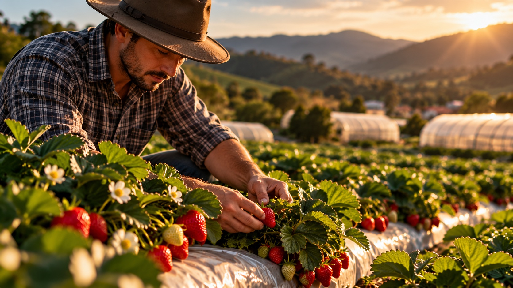
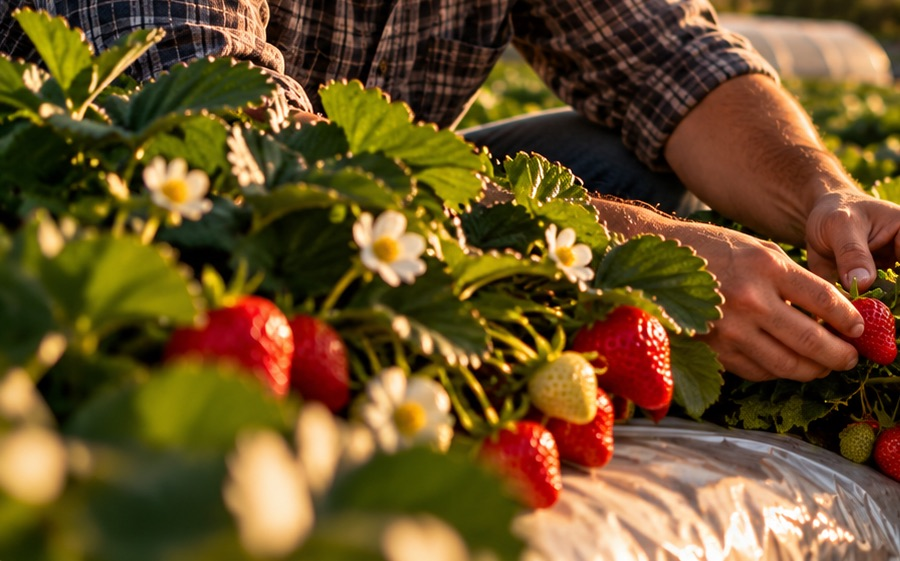
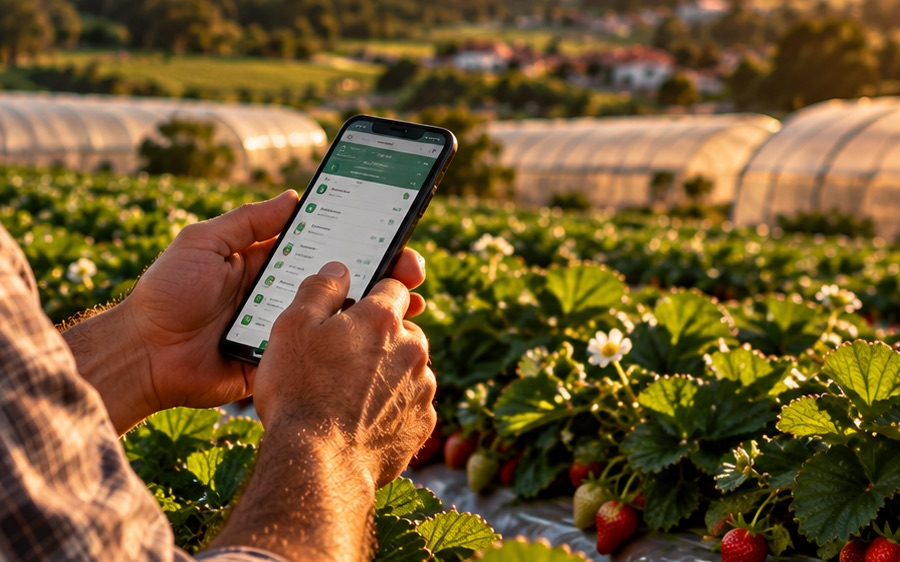
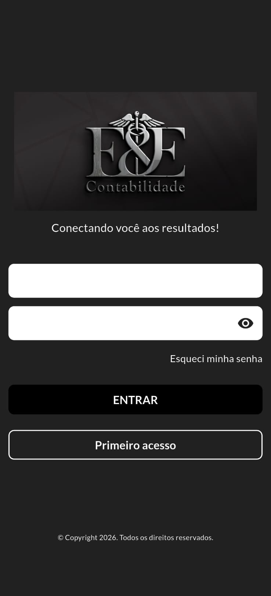
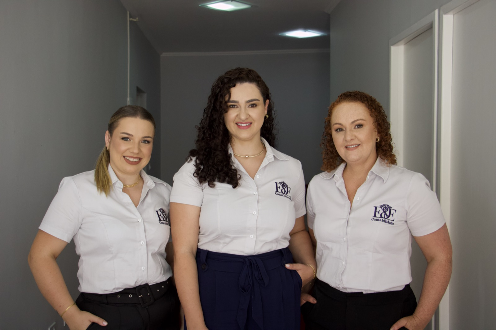
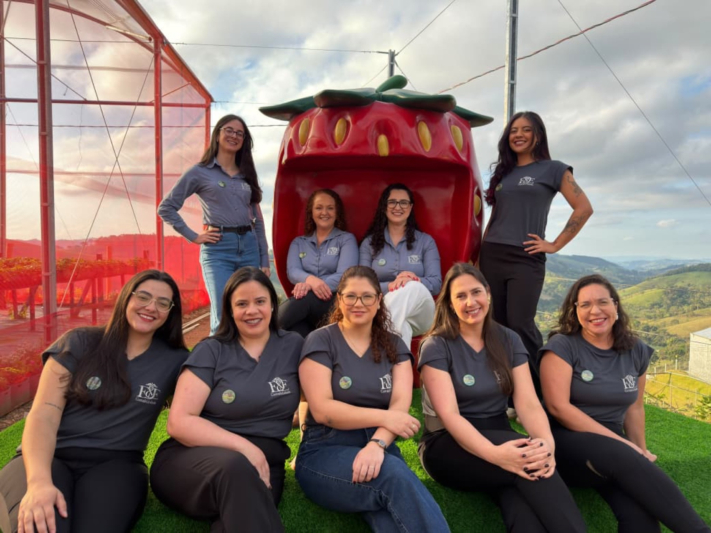
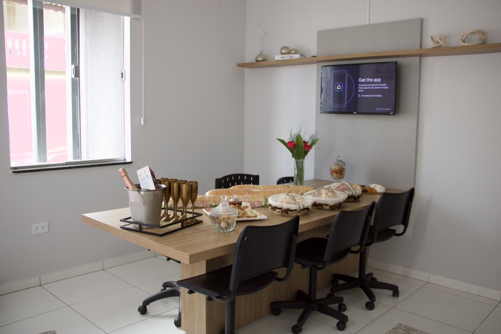
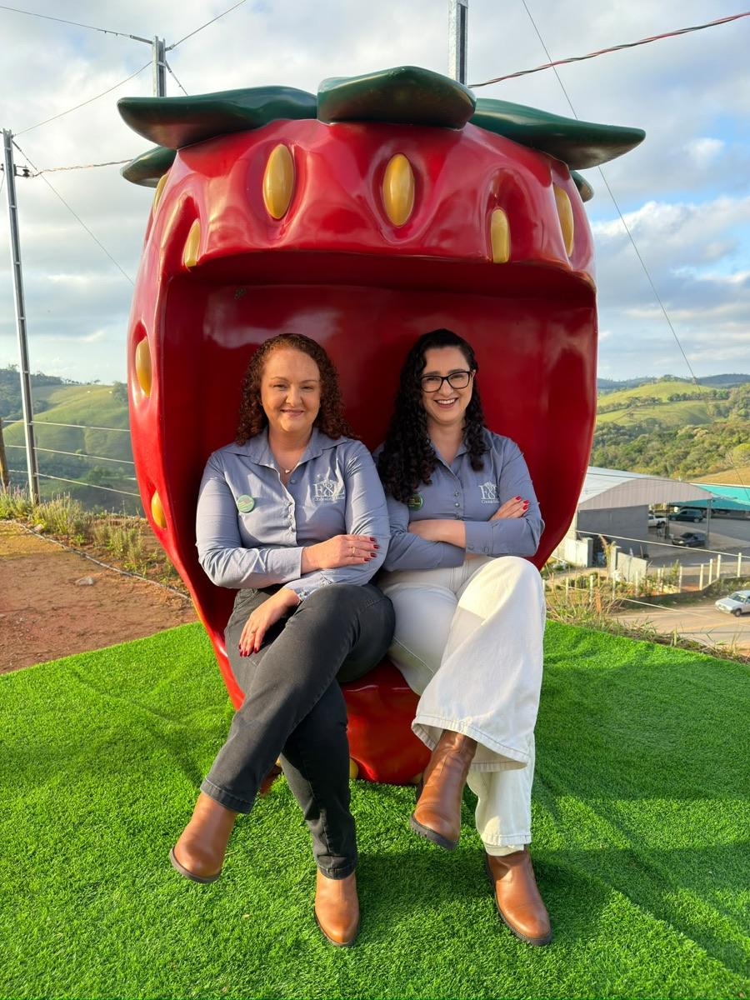
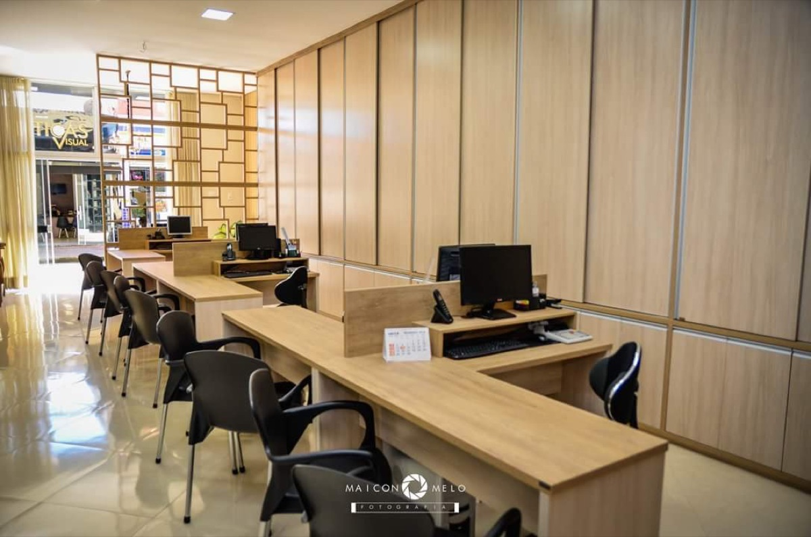
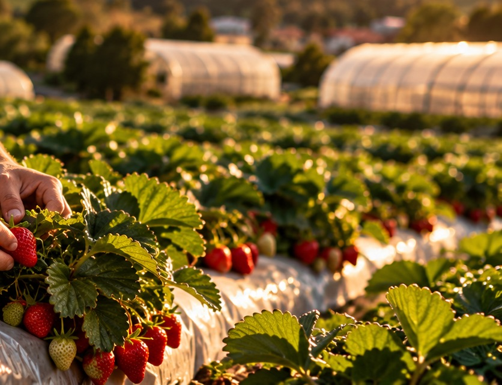

Assessoria ao Produtor Rural
Apoio contábil, fiscal e tributário para a rotina da propriedade.
Saiba maisGestão tributária, tecnologia e assessoria especializada para o produtor rural.
Da emissão de notas fiscais à Reforma Tributária, ajudamos você a cuidar das obrigações da propriedade com mais segurança e tranquilidade.
Contabilidade rural e assessoria tributária para produtores de Bom Repouso e do Sul de Minas.

Apoio contábil, fiscal e tributário para a rotina da propriedade.
Saiba maisOrientação e tecnologia para simplificar a emissão de documentos fiscais.
Saiba mais



A Reforma Tributária traz novas regras e impactos para o produtor rural. Conte com acompanhamento especializado para entender as mudanças e se preparar com antecedência.
Entender a Reforma TributáriaEntenda como os novos tributos podem impactar sua atividade.
Prepare sua propriedade para as mudanças.
Antecipe impactos e organize sua operação.
Conte com orientação durante a transição.
Mais praticidade para a rotina do produtor. Emita suas notas e mantenha suas informações organizadas diretamente pelo celular.
Conhecer o aplicativo

Com atuação voltada ao produtor rural e ao agronegócio, a E&E une conhecimento contábil, acompanhamento tributário e tecnologia para tornar a gestão mais simples e segura.
De Bom Repouso para toda a região, buscamos estar próximos de quem produz, entendendo a realidade de cada propriedade e oferecendo orientação para cada etapa do negócio rural.
Apoiar produtores e empresas do agronegócio com orientação contábil e tributária próxima, clara e responsável.
[TODO: validar texto institucional com a E&E]




Nossa equipe está pronta para entender sua necessidade e orientar você.

Contabilidade, tributação e tecnologia para quem movimenta o campo.
Falar com uma especialista